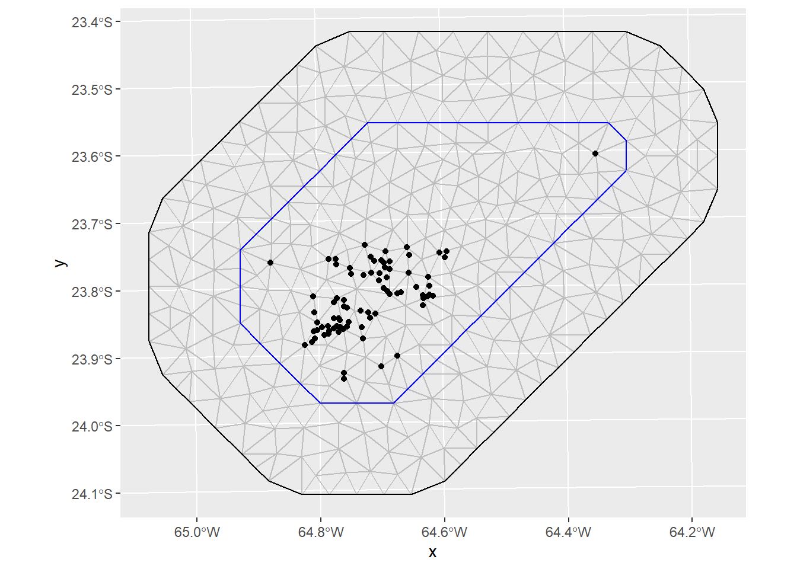

datos <- readxl::read_xls("data/No quemadas.XLS")Ejemplo 1: Modelación del rendimiento de caña de azúcar a partir de información satelital
Motivación
La generación de datos a partir de imágenes satelitales, constituyen una fuente valiosa de información, pudiéndose construir incluso series históricas de imagen de un sitio. En bioestadística este tipo de datos se usa para monitorear ecosistemas, realizar pronósticos climáticos y predecir cosechas, entre otros.
En este caso mostramos la implementación de un análisis exploratorio de datos para caracterizar la variable toneladas de caña por hectárea. Luego estudiaremos el uso de modelos de regresión lineal para estimar rendimientos de caña de azúcar a partir de índices de vegetación elaborados con información proveniente de sensores remotos.
Datos
Trabajamos con datos de imágenes del satélite Landsat 5 TM, seleccionadas desde: USGS (USA): http://earthexplorer.usgs.gov/ e INPE (Brasil): http://www.inpe.br/.
Se utilizaron datos pertenecientes a lotes de producción de caña de azúcar del noroeste argentino, expresados en toneladas de caña por hectárea (TCH) por lote, correspondientes a la zafra de 2009. Se eligieron 79 lotes con fecha de cosecha posterior a la fecha de la imagen satelital y se registraron los valores de TCH y las bandas de la imagen que seria usadas para predecir esa TCH. Todas los lotes fueron cosechado en verde (i.e. no-quema). De cada lote se registró además la edad del cultivo ya que la caña de azúcar es una especie semiperenne y algunos lotes eran del primer año de plantación (caña planta), mientras que otros del segundo año o primer rebrote (soca1) y otros de rebrotes de 2 o más años desde la plantación (entre paréntesis figura el nombre de la variable en el archivo de datos)
- Unidad de análisis (UM)
- Longitud (X_coord)
- Latitud (Y_coord)
- Banda 1 de la imagen satelital (Banda1)
- Banda 2 de la imagen satelital (Banda2)
- Banda 3 de la imagen satelital (Banda3)
- Banda 4 de la imagen satelital (Banda4)
- Banda 5 de la imagen satelital (Banda5)
- Banda 7 de la imagen satelital (Banda7)
- Edad en dos categorías: “Planta o Soca1” y “Soca2 o más” (EDAD)
- Toneladas de caña por ha (TCH)
Lectura
Cálculos de índices a partir de las bandas
- Índice de Vegetación de Diferencia Normalizada (Normalized Difference Vegetation Index,NDVI)
El cálculo del NDVI se basa en la combinación de las bandas 3 (R) y 4 (NIR) ya que las plantas absorben la luz correspondiente a dichas bandas diferencialmente según su estado vegetativo.
\[NDVI = \frac{NIR - R}{NIR + R} = \frac{B4 - B3}{B4 + B3}\]
- NDVI verde (green NDVI, gNDVI). Permite capturar más específicamente la concentración de clorofila.
\[gNDVI = \frac{NIR - G}{NIR + G} = \frac{B4 - B2}{B4 + B2}\]
- Índice de Agua de Diferencia Normalizada (Normalized Difference Water Index, NDWI), se relaciona con la cantidad de agua que posee la vegetación.
\[NDWI = \frac{NIR - SWIR}{NIR + SWIR} = \frac{B4 - B7}{B4 + B7}\]
- Índice de Canopeo Normalizado (Normalized Canopy Index, NCI), relacionado con el área foliar. Mayores valores de NCI indican menor área foliar y mayor cantidad de suelo desnudo, es decir menor canopeo.
\[NCI = \frac{SWIR - G}{SWIR + G} = \frac{B5 - B2}{B5 + B2}\]
diferenciaNormalizada <- function(x, y) {
(x - y) / (x + y)
}datos <- datos |>
mutate(
ndvi = diferenciaNormalizada(Banda4, Banda3),
gndvi = diferenciaNormalizada(Banda4, Banda2),
ndwi = diferenciaNormalizada(Banda4, Banda7),
nci = diferenciaNormalizada(Banda5, Banda2)
)Visualización espacial de los datos
datos_sf <-
sf::st_as_sf(datos,
coords = c('X_coord', 'Y_coord'),
crs = 32720)
tmap_mode('view')
tm_shape(datos_sf) +
tm_dots(col = 'EDAD')Estadística descriptiva
Gráficos
Histograma:
ggplot(datos, aes(TCH)) +
geom_histogram(aes(y = after_stat(count / sum(count))),
bins = 15) +
labs(y = 'Frecuencia Relativa')
Gráfico de cajas:
ggplot(datos, aes(EDAD, TCH)) +
geom_boxplot(width = 0.25)
Análisis de regresión Lineal
NDVI
ggplot(datos, aes(ndvi, TCH)) +
geom_point()
modelo_ndvi <- gls(TCH ~ ndvi,
data = datos,
method = 'REML')
summary(modelo_ndvi)
# modelo_ndvi_gls_ml <- nlme::gls(TCH ~ ndvi, data = datos, method = "ML")
# modelo_ndvi_gls_reml <- nlme::gls(TCH ~ ndvi, data = datos, method = "REML")## Generalized least squares fit by REML
## Model: TCH ~ ndvi
## Data: datos
## AIC BIC logLik
## 638.2853 645.3168 -316.1427
##
## Coefficients:
## Value Std.Error t-value p-value
## (Intercept) -116.3487 33.55502 -3.467399 9e-04
## ndvi 315.0978 51.57112 6.109966 0e+00
##
## Correlation:
## (Intr)
## ndvi -0.999
##
## Standardized residuals:
## Min Q1 Med Q3 Max
## -2.101826835 -0.583310331 -0.006427855 0.590615671 2.809240700
##
## Residual standard error: 14.51098
## Degrees of freedom: 79 total; 77 residualggplot(datos, aes(gndvi, TCH)) +
geom_point()
modelo_gndvi <- gls(TCH ~ gndvi,
data = datos,
method = 'REML')
summary(modelo_gndvi)## Generalized least squares fit by REML
## Model: TCH ~ gndvi
## Data: datos
## AIC BIC logLik
## 636.5645 643.5959 -315.2822
##
## Coefficients:
## Value Std.Error t-value p-value
## (Intercept) -166.8093 40.96877 -4.071620 1e-04
## gndvi 450.6992 72.28599 6.234946 0e+00
##
## Correlation:
## (Intr)
## gndvi -0.999
##
## Standardized residuals:
## Min Q1 Med Q3 Max
## -2.105948821 -0.495019568 -0.001044786 0.545972402 2.835129721
##
## Residual standard error: 14.41405
## Degrees of freedom: 79 total; 77 residualggplot(datos, aes(ndwi, TCH)) +
geom_point()modelo_ndwi <- gls(TCH ~ ndwi,
data = datos,
method = 'REML')
summary(modelo_ndwi)## Generalized least squares fit by REML
## Model: TCH ~ ndwi
## Data: datos
## AIC BIC logLik
## 627.6215 634.6529 -310.8107
##
## Coefficients:
## Value Std.Error t-value p-value
## (Intercept) -166.4233 34.60955 -4.808597 0
## ndwi 353.2421 47.92470 7.370774 0
##
## Correlation:
## (Intr)
## ndwi -0.999
##
## Standardized residuals:
## Min Q1 Med Q3 Max
## -2.08109347 -0.63904986 -0.05915164 0.62053063 2.82980525
##
## Residual standard error: 13.53945
## Degrees of freedom: 79 total; 77 residualggplot(datos, aes(nci, TCH)) +
geom_point()modelo_nci <- lm(TCH ~ nci, data = datos)
summary(modelo_nci)##
## Call:
## lm(formula = TCH ~ nci, data = datos)
##
## Residuals:
## Min 1Q Median 3Q Max
## -35.198 -8.585 -0.175 10.124 33.660
##
## Coefficients:
## Estimate Std. Error t value Pr(>|t|)
## (Intercept) 271.56 38.28 7.093 5.53e-10 ***
## nci -493.28 103.01 -4.789 7.97e-06 ***
## ---
## Signif. codes: 0 '***' 0.001 '**' 0.01 '*' 0.05 '.' 0.1 ' ' 1
##
## Residual standard error: 15.52 on 77 degrees of freedom
## Multiple R-squared: 0.2295, Adjusted R-squared: 0.2195
## F-statistic: 22.93 on 1 and 77 DF, p-value: 7.975e-06rbind(
resumir_modelo(modelo_ndvi),
resumir_modelo(modelo_gndvi),
resumir_modelo(modelo_ndwi),
resumir_modelo(modelo_nci)
) |>
knitr::kable()| Indice | AIC | BIC | RMSE |
|---|---|---|---|
| ndvi | 638.2853 | 645.3168 | 14.32612 |
| gndvi | 636.5645 | 643.5959 | 14.23042 |
| ndwi | 627.6215 | 634.6529 | 13.36696 |
| nci | 661.4378 | 668.5462 | 15.32372 |
Ajuste espacial
modelo_ndwi <- gls(TCH ~ ndvi,
data = datos,
method = 'REML')
modelo_ndwi_conCorr <- gls(
TCH ~ ndwi + ndvi,
correlation = corExp(
form = ~ as.numeric(as.character(X_coord)) + as.numeric(as.character(Y_coord)),
metric = "euclidean",
nugget = FALSE
),
data = datos,
method = 'REML'
)
resumir_modelo(modelo_ndwi)
resumir_modelo(modelo_ndwi_conCorr)## Indice AIC BIC RMSE
## 1 ndvi 638.2853 645.3168 14.32612
## Indice AIC BIC RMSE
## 1 ndwi, ndvi 619.4744 631.128 13.33549INLA
# if (!requireNamespace("BiocManager", quietly = TRUE))
# install.packages("BiocManager")
# BiocManager::install(c("graph", "Rgraphviz"), dep = TRUE)
#
# install.packages(
# "INLA",
# repos = c(getOption("repos"), INLA = "https://inla.r-inla-download.org/R/testing"),
# dep = TRUE
# )
# https://www.r-inla.org/download-install
library(INLA)inla.setOption(inla.mode = 'experimental')library(INLA)
loc <- st_coordinates(datos_sf)
mesh <- INLA::inla.mesh.2d(
loc = loc,
offset = c(5000, 15000),
cutoff = 3000,
max.edge = c(5000, 7000),
max.n = 10000)
proj_obs <- inla.mesh.projector(mesh, loc = loc)
proj_pred <- inla.mesh.projector(mesh, loc = mesh$loc)
spde <- INLA::inla.spde2.pcmatern(
mesh = mesh,
prior.range = c(20000, 0.01),
prior.sigma = c(1, 0.01)
)
A_obs <- inla.spde.make.A(mesh, loc = loc)
A_pred <- inla.spde.make.A(mesh, loc = proj_pred$loc)
idx <- 1:spde$n.spde
stack_obs <-
inla.stack(
data = list(y = datos_sf$TCH),
A = list(A_obs, 1),
effects = list(c(
list(Intercept = 1),
inla.spde.make.index("spatial", spde$n.spde)
),
covar = datos_sf$ndvi),
tag = "obs"
)
stack_pred <-
inla.stack(
data = list(y = NA),
A = list(A_pred),
effects = list(c(
list(Intercept = 1),
inla.spde.make.index("spatial", mesh$n)
)),
tag = "pred"
)
stack <- inla.stack(stack_obs, stack_pred)
formula <- y ~ -1 + Intercept + covar +
f(spatial, model = spde)
result1 <- inla(
formula,
data = inla.stack.data(stack_obs, spde = spde),
family = "gaussian",
control.predictor = list(A = inla.stack.A(stack_obs),
compute = TRUE)
)
summary(result1)
summary(modelo_ndvi)
plot(datos_sf$TCH, result1$summary.fitted.values[inla.stack.index(stack_obs, "obs")$data, "mean"],
main = "Observations vs posterior predicted values at the data locations")
result2 <- inla(
formula,
data = inla.stack.data(stack, spde = spde),
family = "gaussian",
control.predictor = list(A = inla.stack.A(stack),
compute = TRUE)
)
plot(datos_sf$TCH, result2$summary.fitted.values[inla.stack.index(stack_obs, "obs")$data, "mean"],
main = "Observations vs posterior predicted values at the data locations")field_pred <- inla.mesh.project(proj_pred,
result2$summary.fitted.values[inla.stack.index(stack, "pred")$data, "mean"])
field_pred_sd <- inla.mesh.project(proj_pred,
result2$summary.fitted.values[inla.stack.index(stack, "pred")$data, "sd"])##
## Call:
## c("inla.core(formula = formula, family = family, contrasts = contrasts,
## ", " data = data, quantiles = quantiles, E = E, offset = offset, ", "
## scale = scale, weights = weights, Ntrials = Ntrials, strata = strata,
## ", " lp.scale = lp.scale, link.covariates = link.covariates, verbose =
## verbose, ", " lincomb = lincomb, selection = selection, control.compute
## = control.compute, ", " control.predictor = control.predictor,
## control.family = control.family, ", " control.inla = control.inla,
## control.fixed = control.fixed, ", " control.mode = control.mode,
## control.expert = control.expert, ", " control.hazard = control.hazard,
## control.lincomb = control.lincomb, ", " control.update =
## control.update, control.lp.scale = control.lp.scale, ", "
## control.pardiso = control.pardiso, only.hyperparam = only.hyperparam,
## ", " inla.call = inla.call, inla.arg = inla.arg, num.threads =
## num.threads, ", " blas.num.threads = blas.num.threads, keep = keep,
## working.directory = working.directory, ", " silent = silent, inla.mode
## = inla.mode, safe = FALSE, debug = debug, ", " .parent.frame =
## .parent.frame)")
## Time used:
## Pre = 2.73, Running = 2.26, Post = 0.11, Total = 5.1
## Fixed effects:
## mean sd 0.025quant 0.5quant 0.975quant mode kld
## Intercept 29.894 16.269 -1.856 29.839 61.948 NA 0
## covar 89.797 24.907 40.726 89.879 138.408 NA 0
##
## Random effects:
## Name Model
## spatial SPDE2 model
##
## Model hyperparameters:
## mean sd 0.025quant 0.5quant
## Precision for the Gaussian observations 4.00e-03 1.00e-03 3.00e-03 4.00e-03
## Range for spatial 2.21e+05 3.59e+05 2.05e+04 1.18e+05
## Stdev for spatial 2.50e-01 2.64e-01 1.70e-02 1.71e-01
## 0.975quant mode
## Precision for the Gaussian observations 5.00e-03 NA
## Range for spatial 1.06e+06 NA
## Stdev for spatial 9.48e-01 NA
##
## Marginal log-Likelihood: -356.48
## is computed
## Posterior summaries for the linear predictor and the fitted values are computed
## (Posterior marginals needs also 'control.compute=list(return.marginals.predictor=TRUE)')
##
## Generalized least squares fit by REML
## Model: TCH ~ ndvi
## Data: datos
## AIC BIC logLik
## 638.2853 645.3168 -316.1427
##
## Coefficients:
## Value Std.Error t-value p-value
## (Intercept) -116.3487 33.55502 -3.467399 9e-04
## ndvi 315.0978 51.57112 6.109966 0e+00
##
## Correlation:
## (Intr)
## ndvi -0.999
##
## Standardized residuals:
## Min Q1 Med Q3 Max
## -2.101826835 -0.583310331 -0.006427855 0.590615671 2.809240700
##
## Residual standard error: 14.51098
## Degrees of freedom: 79 total; 77 residual